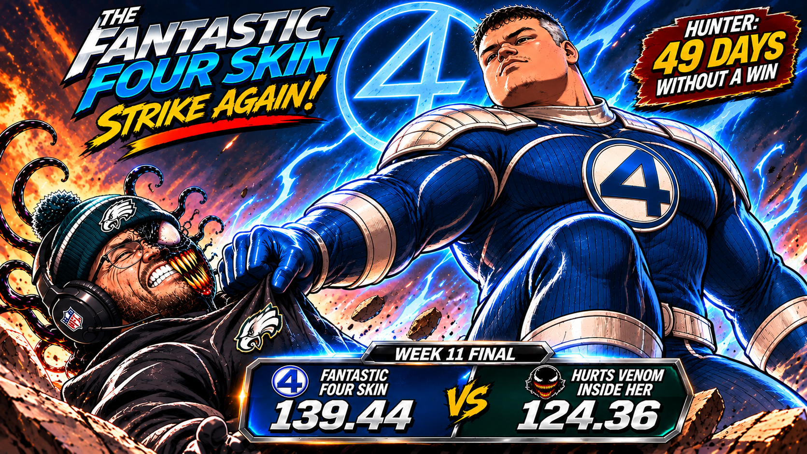

VENOM GETS CIRCUMCISED

The Fantastic Four Skin are starting to look like a legitimate playoff threat, while Hurts Venom Inside Her continues to look like a sexually transmitted losing streak.
Travis improved to 6–5 with his second consecutive victory, posting the second-highest score of Week 11. His lineup would've beaten six of the seven other teams in the league.
Hunter, meanwhile, hasn't won since Week 4. Halloween came and went, Thanksgiving is approaching, and children conceived during his last victory are approximately the size of a blueberry.
FOUR SKIN IS GETTING HOT
| Week | Travis | Hunter |
|---|---|---|
| 8 | 109.26 | 101.38 |
| 9 | 146.84 | 98.26 |
| 10 | 151.42 | 142.46 |
| 11 | 139.44 | 124.36 |
| Last 3 avg | 145.90 | 121.69 |
After a season-low 82.52 in Week 2, Travis is averaging 145.90 over his last three games. Hunter is averaging 121.69 over the same stretch.
HUNTER'S SEVEN STAGES OF GRIEF
It's hard to complain about scheduling luck when you're the reason everyone else has a good schedule.
Hunter's $50 buy-in should qualify as a charitable contribution at this point. Somebody get this man a tax receipt.
ROAD TO THE PLAYOFFS
| Remaining schedule | Record |
|---|---|
| Week 12 — DK | 9–2 |
| Week 13 — Mike | 6–5 |
| Win both | 8–5 |
| Split | 7–6 |
| Lose both | 6–7 |
Travis has gone from 4–5 to 6–5. His next two games give him a chance to strengthen his playoff position, although neither opponent will make it easy.
NEXT WEEK: THE THANKSGIVING STUFFING
Travis has won two straight. The Juggernauts have won six straight and are coming off a league-record performance.
Hunter faces Wanda (5–6), with a chance to end his losing streak and complicate her playoff race.
If the Four Skin want a happy ending, they're going to have to finish strong.